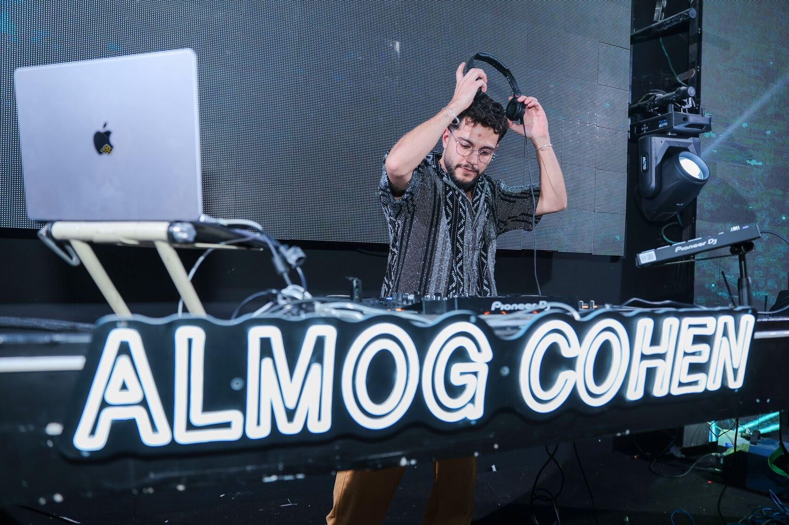
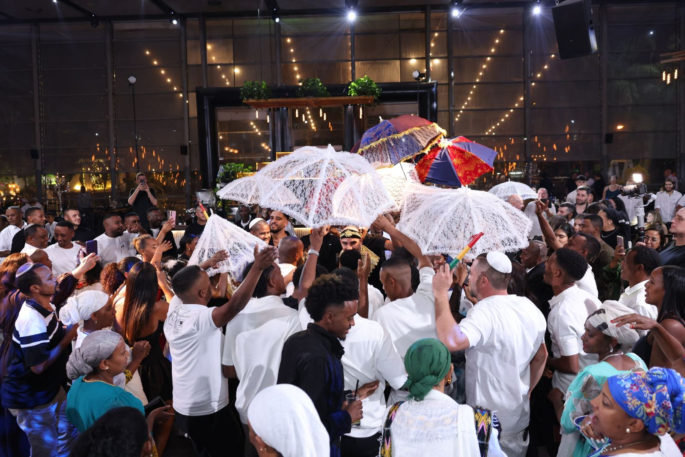
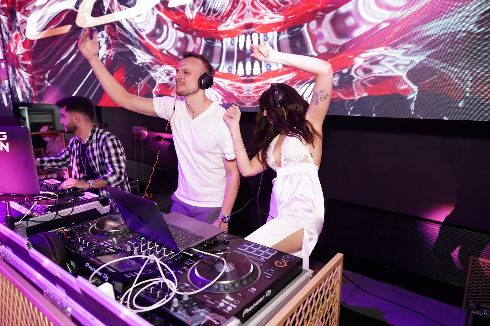
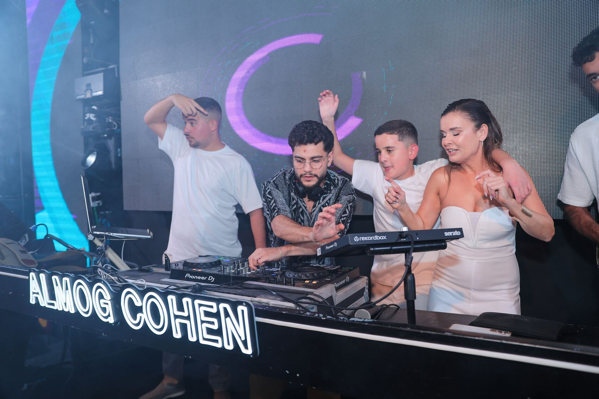

קבלת פנים
אווירה רכה, נעימה, שמכניסה את האורחים לערב בלי להרים את הקול.

מהרגע שהאורחים נכנסים, דרך החופה, הריקוד הראשון, ועד הרחבה שלא מתרוקנת. אני בונה איתכם את הערב, שיר אחרי שיר, כדי שהוא יישמע בדיוק כמו שאתם.


כל חתונה נבנית בפגישת היכרות, בשאלון מוזיקלי משותף ובבריף מדויק. ביום עצמו, אתם רק רוקדים.
אווירה רכה, נעימה, שמכניסה את האורחים לערב בלי להרים את הקול.
השיר של הכניסה, הרגע של הטבעת, שבירת הכוס. כל דקה מתוזמנת איתכם מראש.

הרגע שבו כולם מסתכלים רק עליכם. מהעיבוד ועד הטיימינג של הסיום.

מהשיר הראשון שמוריד את כולם מהכיסאות ועד השיר האחרון שאף אחד לא רוצה שייגמר.


״חתונה טובה לא נמדדת בכמה חזק המוזיקה. היא נמדדת בכמה אנשים נשארו על הרחבה בשיר האחרון.״
אני אלמוג כהן, DJ מזה למעלה מעשור, עם מאות חתונות מאחוריי ובית ספר ל-DJ שאני מנהל במקביל. אני מאמין שהערב שלכם צריך להישמע כמוכם, לא כמו עוד חתונה.
הגישה שלי פשוטה: להקשיב קודם, לתקלט אחר כך. לכן לכל זוג יש פגישת היכרות, שאלון טעמים משותף וקו פתוח עד יום האירוע.







אלמוג, אין לנו מילים. הרחבה לא התרוקנה לרגע, גם לא כשהאולם כבר רצה לסגור. ההורים שלנו עדיין מדברים על זה.
הגענו עם רשימת שירים ארוכה ובלגן בראש. אלמוג לקח את זה והפך את זה לסיפור. הריקוד הראשון היה בדיוק כמו שחלמנו.
הכי חשוב לנו היה שכולם ירקדו, מהסבתא ועד החברים מהצבא. הוא קרא את הרחבה כמו מקצוען אמיתי.
התאריכים לעונת החתונות נסגרים חודשים מראש. שלחו הודעה קצרה עם התאריך והמקום, ואחזור אליכם תוך כמה שעות.